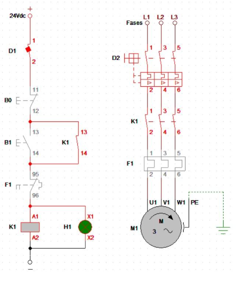

Cibersistemas
CADe SIMU
Software para desenhar e simular circuitos elétricos de comando e potência antes da montagem física.
Conceito
O CADe SIMU é um software utilizado para desenhar e simular circuitos elétricos de comando e potência, permitindo testar o funcionamento de sistemas de automação antes de sua montagem física.
- Criação de diagramas elétricos com símbolos padronizados
- Simulação do acionamento de componentes, como contatores, relés, motores e botoeiras

Detalhes
Informações Complementares
Funcionamento
Permite criar diagramas elétricos com símbolos padronizados e simular o acionamento de componentes, como contatores, relés, motores e botoeiras.
Aplicações
- Elaboração de diagramas elétricos.
- Simulação de circuitos de comando e potência.
- Estudos de acionamento de motores.
- Ensino de comandos elétricos.
Vantagens
- Facilita a aprendizagem de circuitos elétricos.
- Permite identificar erros antes da montagem.
- Reduz custos com testes físicos.
- Auxilia no planejamento de instalações elétricas.